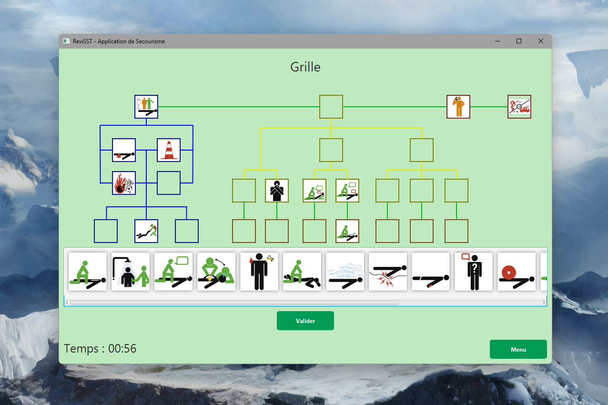

00GET /
Développeur logiciel
Passionné par le développement logiciel et les nouvelles technologies. Actuellement en 3e année de BUT Informatique, je construis des solutions élégantes et efficaces.
- année de BUT
- 3e
- projets
- 7
- langages pratiqués
- 5
Je travaille en équipe sur Livreo, un système de gestion de tournées de livraison : API Spring Boot et application Android.
01GET /projets
Mes projets
01
API interne pour ITSM/CMDB (iTop)
API REST interne — C# / ASP.NET Core
Stage
API interne pour ITSM/CMDB (iTop)
API REST interne — C# / ASP.NET Core
API REST interne développée en C# / ASP.NET Core, qui fait communiquer les applications internes de l'entreprise avec iTop, un outil ITSM/CMDB open source, pour mettre à jour la CMDB. Elle dialogue avec l'API REST/JSON d'iTop via des requêtes OQL (Object Query Language).
Le projet suit une architecture en couches stricte (Controllers → Services → DTOs → Models), avec une modélisation métier dédiée aux entités du CMDB (serveurs, bases de données, applications web, instances logicielles).
- Architecture en couches (Controllers → Services → DTOs → Models)
- Construction dynamique de requêtes OQL et gestion de leur échappement
- Couverture de tests systématique (DTO, Service, Controller) avec MSTest
- Documentation API via Swashbuckle / OpenAPI
- Analyse statique et qualité de code (SonarQube / Roslyn)
Projet interne — code source non public.
02
Synchronisation ITSM multi-sources (iTop)
Framework PHP — collecteurs OAuth2
Stage
Synchronisation ITSM multi-sources (iTop)
Framework PHP — collecteurs OAuth2
Extension du framework open source de collecte de données de Combodo pour iTop (itop-data-collector-base), permettant de synchroniser automatiquement des données fournisseurs et clients issues d'API REST externes protégées par OAuth2 vers le CMDB iTop, en remplacement d'une saisie manuelle.
- API externe OAuth2
- Authentification client-credentials
- Collector Prepare / Fetch
- Model mapping vers les attributs iTop
- Export CSV
- synchro_import.php définition JSON
- synchro_exec.php réconciliation dans iTop
Le travail a surtout porté sur la fiabilisation d'une première implémentation fragile : diagnostic d'échecs de configuration silencieux, explicitation de la gestion des erreurs HTTP, et correction d'une fuite d'identifiants OAuth2 en clair dans les logs, identifiée lors d'une revue de code.
- Authentification OAuth2 (client-credentials)
- Pipeline ETL vers les webservices de réconciliation iTop
- Gestion explicite des erreurs HTTP et logging structuré
- Pattern reproductible pour l'ajout de nouvelles sources de données
Projet interne — code source non public.
03
ReviSST — révision pour les SST
Application desktop JavaFX
SAE
ReviSST — révision pour les SST
Application desktop JavaFX
Application desktop développée en JavaFX pour la révision des situations et des pictogrammes, destinée aux Sauveteurs Secouristes du Travail (SST).
Le projet suit une architecture MVC stricte, avec persistance des données en JSON et gestion des scores par mode de jeu et par utilisateur.

- Gestion des utilisateurs et des scores
- Plusieurs modes de jeu
- Persistance des données en JSON
04
Wemember — gestion d'association
Site web dynamique PHP
SAE
Wemember — gestion d'association
Site web dynamique PHP
Plateforme web collaborative avec système d'authentification, gestion des utilisateurs et tableau de bord administrateur, pour gérer une association.
L'application intègre une gestion des rôles avec différents niveaux de permissions, ainsi que la gestion des documents déposés par les utilisateurs, avec export des données au format PDF.

- Authentification sécurisée et gestion des rôles
- Tableau de bord administrateur
- Gestion des documents et export PDF
- Interface responsive
05
Livreo — tournées de livraison
API Spring Boot et application Android
SAE · en cours
Livreo — tournées de livraison
API Spring Boot et application Android
Livreo est un système de gestion de tournées de livraison pour l'entreprise fictive T.G.V., réalisé en équipe dans le cadre de la SAE S5.A.01 « Développement avancé » du BUT 3.
Une interface « Atelier » sur PC permet de gérer les clients, les commandes, les pièces et les colis. Une application Android destinée aux chauffeurs affiche les colis à livrer et les points de livraison sur une carte, et fonctionne hors ligne.
Étape suivante : l'optimisation de la boucle de livraison.
- API Spring Boot (Java 21, Maven), conteneurisée avec Docker
- Application Android utilisable hors ligne
- Géocodage des adresses via la Géoplateforme de l'IGN
- Intégration continue avec GitHub Actions
- Organisation Scrum, suivi sur GitHub Projects
06
Watchd — collection de films et séries
Application web PHP, SQLite et API TMDB
Perso
Watchd — collection de films et séries
Application web PHP, SQLite et API TMDB
Watchd est une application web personnelle pour gérer sa collection de films et de séries. On recherche un titre via l'API TMDB (recherche en direct, tendances) et on l'ajoute à sa collection, puis on le marque « à voir », « en cours » ou « vu », avec un suivi par saison pour les séries.
On peut noter ce qu'on a vu sur 10 et laisser un commentaire. Les films d'une même saga sont regroupés, avec une fiche détaillée (bande-annonce YouTube) et une interface « cinéma » responsive, sur mobile comme sur PC.

- Recherche en direct et tendances via l'API TMDB
- Statuts « à voir », « en cours », « vu » et suivi par saison
- Notes sur 10 et commentaires
- Regroupement des sagas et fiches détaillées
- CSS écrit à la main, responsive
07
GestionProjet-IUT — suivi de projet agile
FastAPI, React et intégration GitHub
Perso
GestionProjet-IUT — suivi de projet agile
FastAPI, React et intégration GitHub
GestionProjet-IUT est un outil web de suivi de projet agile (Scrum) pour des équipes étudiantes. Les membres saisissent leurs heures de travail par catégorie, synchronisent les issues et les sprints depuis GitHub, et suivent l'avancement avec un dashboard, un burndown chart et un diagramme de Gantt.
L'outil génère aussi les comptes-rendus des cérémonies Scrum (daily, planification, review, rétrospective) en Word, et des exports Excel des heures.


- Saisie des heures par catégorie, dashboard et exports Excel
- Synchronisation des issues et des sprints depuis GitHub
- Burndown chart et diagramme de Gantt
- Comptes-rendus de cérémonies Scrum générés en Word
- Authentification par Cloudflare Access (JWT)
- Docker Compose, CI/CD GitHub Actions, tests pytest
- Déployé sur un Raspberry Pi via Cloudflare Tunnel
02GET /a-propos
À propos de moi
Artisan du code et curieux de nature, je me spécialise dans le développement d'applications web et logicielles. Mon parcours à l'IUT m'a permis d'acquérir des bases solides en algorithmique, bases de données et développement web.
Au-delà du code, je m'intéresse à l'expérience utilisateur et au design d'interface. Je crois en des solutions simples et bien pensées, où chaque ligne de code a un but précis.
En ce moment, je travaille en équipe sur Livreo, un système de gestion de tournées de livraison : une API Spring Boot et une application Android, dans le cadre d'une SAE de 3e année.
- formation
- BUT Informatique (3e année)
- localisation
- Rodez, France
- intérêts
- Applications, bases de données, web, algorithmie
- disponibilité
- Stage / Alternance
03GET /competences
Stack technique
- langages 5
- Java
- PHP
- SQL
- Python
- C#
- frontend 4
- HTML
- CSS
- JavaScript
- Bootstrap
- backend 5
- JavaFX
- ASP.NET Core
- REST API
- OAuth2
- JSON
- données 2
- SQL
- MongoDB
- outils 8
- IntelliJ
- PHPStorm
- Git
- GitHub
- SQL Developer
- Docker
- Linux
- Figma
04GET /contact
Prenons contact
Je suis actuellement à la recherche d'une alternance pour poursuivre mon parcours. N'hésitez pas à me contacter pour discuter de vos projets ou opportunités.